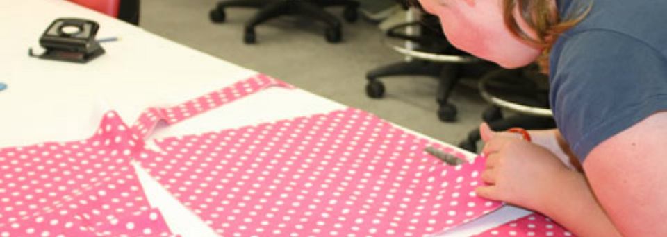

Birthday Parties
Have your party at CREATE
Have you next birthday party or creative gathering, girls night out, wedding/baby shower at Create! Parties can be as freeform or as directed as you want them to be. Our craft parties are two hours long. Kids party includes use of our craft castle.
We clean up afterwards so you can just enjoy the party. When you have your Special Day at Create, you will be helping children in shelters receive a Birthday in a Box and more. This is a Win-Win scenario!
Birthdays at Create are fun! Our birthdays are easy to plan, and we will work with you to insure you have an unforgettable celebration.
Fill free to bring your own cake, ice cream and decorations or use any of ours that are available.
Parties range in price from $120 with 12 guests (includes birthday boy/girl). Our package includes a short tour of Create 2 Day, a creative reuse project of your choice, up to 1 1/2 hour in the workshop and 1/2 hour in the party room, reuse invitations, goodies bag for the guest, all materials and the expertise of our artsy and knowledgeable party host(s) and a special gift for the birthday boy/girl.
These parties can be themed. Some example party themes are below:
-
Castle Play - Princesses, Dragons, Pirates, Fairies, Monsters, Aliens (with Fairy Wings and Princess Crowns) and make a project to take home.
-
Dance Party - Design a dance party just for you and your friends. You help pick the music and the theme. Ballerina parties, princess dance and bunny hop just to name a few and make a project to take home . (ages 2 and up)
-
Tiny Tots - this party gives the little ones a taste of art while creating a masterpiece with help from Mom and Dad. We offer a variety of hand print art options that make a perfect keepsake. (Ages 12 months and up, 60 min long $110 for up to 10 kids.
-
Artful Scientist - This party will combine science with art! We will do a variety of science experiments and turn them into art projects. Some of the projects include making bouncy balls, baking soda, vinegar art and more! (Ages 5 and up)
-
Carnival/Circus Party - Don't wait until summer for the carnival have one at CREATE. Games, Food (cotton candy, popcorn, etc.) clown, magician, prizes, a special fun house, make a project to take home (optional).
-
Clever Creatures - kids will begin by sketching their magical creatures and what powers/abilities they want them to have. Then we will build the creatures out of various materials such as boxes, pipe cleaners, goggle eyes, foil and more (Ages 6 and up)
-
Garden Party - kids will decorate plant markers before painting and bedazzling their very own flower part. We will provide a beautiful flower to be placed in the pot to take home at the end of the party. (Ages 3 and up)
-
Jewelry Party - kids will decorate their own jewelry boxes before making special jewels to put in their boxes. We will make sparkly rings and necklaces or bracelets to match. (Ages 6 and up)
-
Superhero Party - kids will make their own mask and cape with various materials before transforming into their own unique superhero. (Ages 5 and up) - American Girl Doll - Deck out your doll. This party makes a project for 18" dolls. Options include clothing and/or furniture pieces. Certain projects have an additional materials fee. (Doll not included!) (Ages 7 and up)
-
Karaoke/Dance Party - You plan the party. It can be as elaborate or simply as you wish. You select the music (art/craft project optional). (Ages 7 & up)
-
Celebrity Party - "The Ice Queen", "Spider man", "Pocahontas", let us know who your favorite character is and we will see if he or she is available. It will be a fun time. (An art/craft project is optional) Call for price.
Scheduling
First, check our calendar for availability. Call us at PHONE NUMBER HERE. Please schedule with us at least two weeks in advance. A $50 deposit needs to be paid. Arrive up to 30 minutes early to decorate any way you want or just take it easy and enjoy our always festive Castle. Have a photo with props. You furnish the camera and take a group picture. Parties should be scheduled at least 2 weeks in advance. All parties require payment in full upon confirmation of party date. Payments refundable with 14 days notice. The payment is non-refundable for cancellations less than 14 days before the scheduled party date.
And as always, enjoy and have fun at Create!
Birthday in a Box
Do you remember your childhood?
The excitement of opening gift on your birthday and holidays and blowing out candles on your beautiful birthday cake?
Nothing symbolizes a birthday more than a cake adorned with candles and a gift.
Yet while many of us take a birthday cake and presents for granted, there are children who miss out receiving this simple, yet special, pleasure on their big day. In economically challenged homes, birthday cakes and presents are sometimes an unaffordable luxury when compared to competing priorities for medicine, clothes, and rent. As a result, many children living in poverty or in shelters do not have birthday parties to celebrate.
Create wants to ensure that the needy children have those joyful experiences as well by providing cakes and distributing new toys and gently-used toys, games, dolls, and books; bringing smiles to young faces.
Children need experiences in which they are shown that they are valued. When kids see a birthday cake with their name on it, they know that the occasion is just for them.
Doesn't every child deserve to have that moment of being the star? We think so; so our "Birthday In a Box" Program was born.
This program is for children that are in Shelters or Foster Homes. Some of these children have not been able to enjoy a Birthday or have a Birthday Party.
With your help and donations, we provide the children a cake and presents wrapped festively for the occasion. These are put in a large box and again wrapped appropriately at which time the box is delivered according to security guidelines. We prefer new toys and items for this program. Our proceeds and donations cover the cost of gifts, and cakes are made by volunteers who support the program. See our donations page for more information.
Gifts for Seniors
Unfortunately some of our seniors are spending their later years in nursing homes. Once there, some feel they are no longer important or necessary.
Create wants them to know they are still loved and thought of. Please help us provide small celebrations of the birthday or holiday.
These gifts include heartwarming cards, small gifts, and various crafts made in our store.